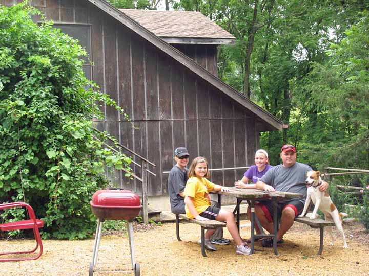

Whiterock Conservancy Lodging 
Looking for a romantic getaway? Need to rejuvenate? Enjoy sleeping under the stars?
We offer several lodging options. Spend a night in the comfortable, individual rooms at the historic Garst Farmhouse, the home of Roswell and Elizabeth Garst. Or bring your family and friends for a night in one of the cozy cottages.
If you enjoy the outdoors, we offer a rustic 3-season cabin on the banks of the Middle Raccoon River and low-impact campgrounds.
Lodging Options: |
Historic Garst Farmhouse
We are located at 1390 Hwy 141, Coon Rapids, Iowa 50058. Come explore the Roswell and Elizabeth Garst Farmstead Historic District on your own or with helpful staff guidance. Subject to occupancy, guests may visit each of the individual rooms which are full of antiques and historical photographs.
| Site of the 1959 Khrushchev visit and former home of Roswell & Elizabeth Garst, this inviting 5 bedroom farmhouse is on the National Register of Historic Places. Inside the home are additional rooms which include a collection of artifacts, photos, and library with books and film.
|

Individual Rooms
Garden Terrace |
|
 |
Harvest Room
|
Roswell Suite
|
|
Elizabeth's Loft
|
|
 |
Toshiama Room
|
Return to top of page
Hollyhock and Woodland
Hollyhock Cottage |
An excellent fishing pond and the town-loop trail system connect to Hollyhock's yard. An optional self-serve continental breakfast is available next door. Pets are welcome, but must be kept off of the furniture. A dog kennel is available in a nearby shed. |
Woodland Carriage House The fully equipped kitchen includes a vintage but functional wood burning cook stove, an electric stove, full-sized refrigerator, dining table, coffee pot, microwave, basic pots and pans, and tableware. 
|
A charcoal grill and picnic area are set up right outside the Carriage House. Located nearby is a bonfire ring, fishing ponds, multi-use trails and the Middle Raccoon River await your adventures. Pets are welcome! There are outdoor dog kennels available. Dogs are welcome to be inside but only if you are with them and keep them off of the furniture. There is plenty of room in the facility for your own dog kennel. Return to top of page |

Oakridge Country Farmhouse
Located at 1564 125th Street, Coon Rapids, Iowa 50058, Oakridge is a very large, private farmhouse deep in the countryside on a ridge overlooking Whiterock Valley. Deer, coyotes, wild turkeys and grazing cattle are frequently spotted from the house.
| Ideal for a family reunion or corporate retreat, this house has an official sleeping capacity of 13. A spacious living room and kitchen allow for serving up to 30 people. Five bedrooms total, the main floor bedroom contains queen and twin beds. Three bedrooms upstairs are usually configured with two twin beds each, though with advance notice, these can be converted to short king beds. The last upstairs bedroom contains two queen beds and a seating area. There are two full bathrooms in the house (1st floor and 2nd floor) and also an upstairs hallway vanity with sink. Many family reunion groups tuck in extra children in the spacious living room and the ample bedrooms.
|


Return to top of page
Primitive Cabin
The 3-season cabin includes a small bedroom (with queen and twin), a living/sitting room (with twin), an upstairs loft (with queen) and a small sitting area. Two queen and two twin foam mattresses on platform beds are provided. YOU MUST BRING YOUR OWN LINENS OR SLEEPING BAGS. Screen windows are covered with shutters. A small table, chairs and a lantern are provided. |
805 River Cabin
|

Dogs are welcome at 805 River Cabin. Horses can also be kept at the cabin in an open steel pen (we have two available), on the tie line, or by closing the gate and allowing them to roam within the small fenced in area surrounding the cabin. This site is designated as a strictly hike-in or horseback ride-in site from the Main Campground. It is approximately a 1 mile hike-in site following the river or a few miles by horseback following the main trail. Call ahead to inquire and make your reservation. Absolutely NO ATVs allowed.
Return to top of page
Primitive Campgrounds
|
|

Several horse tie lines are provided, along with a manure pit and wheelbarrow. Several steel pens are provided (additional fee) and are available on a first-come first-served basis.
When available, the River House yard and dance barn, across the road, offers an additional old fashioned, double-seater outhouse, a year-round hydrant for potable water, and a historic three-story barn in which to play on rainy days.
Several excellent fishing ponds, trailheads, adjacent river with easy access, and a nearby abandoned 1800's log cabin are within hiking distance
| Turkey Ridge Campground
For real privacy consider our Turkey Ridge Campsites. These are located on the edge of a gorgeous woodland and oak savannah. On three separate ridgelines, each site is equipped with a picnic table and bonfire ring. All campsites share a common port-a-potty. Limitations: no electric or water hookups are provided and no outside firewood is allowed. Firewood is available for sale in the campground. The campsites lie about 1/2 mile off the nearest gravel road, on a sandy flat trail, and are accessible by vehicles. Cost is $8 per tent per night. Please register at the self check-in kiosk in the Main Campground before setting up camp at Turkey Ridge. Return to top of page |
Return to top of page |
1390 Highway 141, Coon Rapids, IA 50058 | 712-684-2697
Whiterock Conservancy, a private, 501(c)(3) land trust, providing sustainable agriculture,
conservation, outdoor activities and recreation and environmental education.